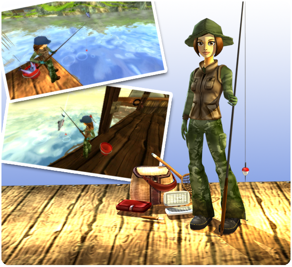

Üdv mindenkinek!
Mivel ez az első heti frissítés új nemzetközi játékosaink számára, itt az ideje, hogy elmagyarázzuk, hogyan adunk hozzá izgalmas új tartalmakat, amelyeket minden héten élvezhettek!
Minden szerdán 8:00 és 12:00 között (GMT) leállítjuk a szervereket, hogy új és izgalmas tartalmakat és új funkciókat adhassunk hozzá!
Hogy megtudjátok, mikor nyílnak meg újra a szerverek a városotokbank:
Idő a városotokban
Újdonságok a heti frissítésben:
Új küldetések a 12. szintű játékosok számára:
Mr. K. Trout a Nyugat-Foki Halászfaluban nagyon elfoglalt, és szüksége van a segítségetekre! Ideje kipróbálni a HALÁSZATOT!

Új ruhák a héten:
Mr. Loop izgalmas új ruhákkal várj a héten! Ha néhány napig segítesz a halászoknak, megvásárolhatod az új ruhákat.
Jelenleg új, izgalmas tartalmakat készítünk a játékhoz, amelyeket heti frissítéseinkben fogunk közzétenni!
Üdvözlettel: